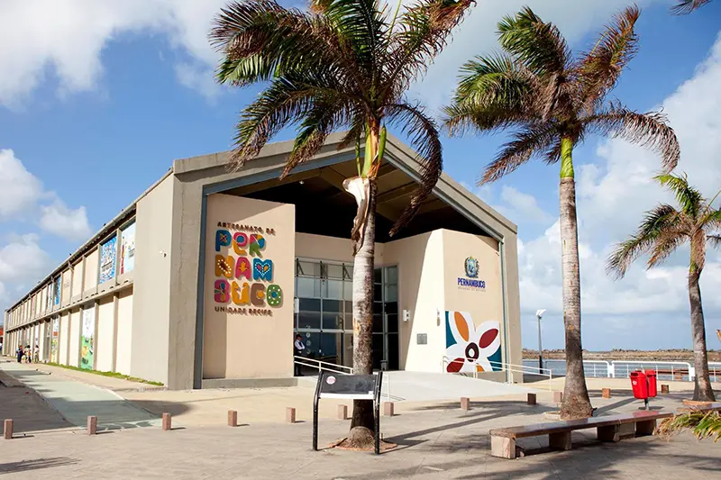
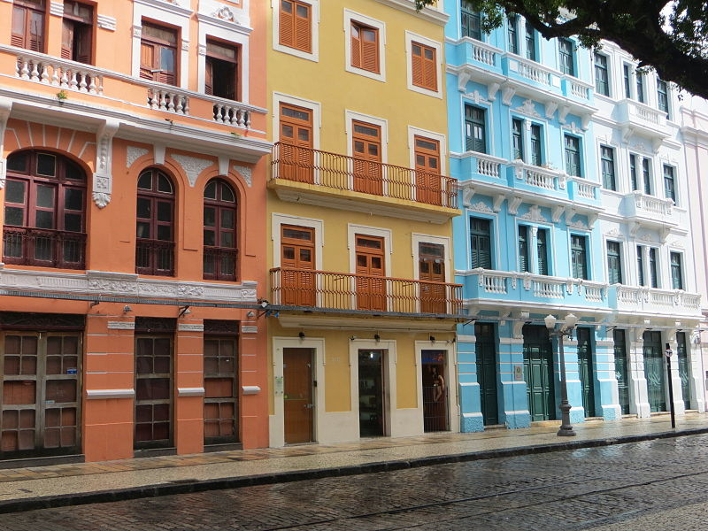

- Marco Zero
- Centro de Artesanato 
- Rio Capibaribe
- Parque das Esculturas Francisco Brennand
- Museu Cais do Sertão
- Paço do Frevo
- Centro Cultural Judáico
- Rua Bom Jesus e Feirinha 
- Pontes Holandesas
- Instituto de Ricardo Brennand

O Marco Zero é uma praça ampla cercada de um lado por prédios históricos do final do século 17 e do outro pelo Rio Capibaribe (que corta a cidade). Ele está entre os principais pontos turísticos de Recife com certeza!
No chão, está pintada a emblemática “Rosa dos Ventos” e, no seu centro, uma peça em metal avisando que é ali que começa a contagem das distâncias entre Pernambuco e outras regiões do estado.
Esse ponto turístico de Recife funciona em dois sentidos: é uma grande galeria que expõe as obras dos artesãos e artistas de todo o estado e também uma central de vendas, pois você pode comprar tudo o que está exposto no local.
Mesmo que a ideia não seja levar nada, entre e confira. Tem peças em barro, algodão, tecido, madeira, palha, couro e inúmeros outros materiais.

Recife é chamada por alguns de a “Veneza brasileira”, por conta dos canais que cortam a cidade. A navegação é oferecida por algumas empresas privadas.
Existem algumas opções que saem do próprio Marco Zero que lhe leva direto para o Parque das Esculturas Francisco Brennand, que fica do outro lado do rio. Mas, esse parque é uma área mais “abandonada”, falo mais sobre isso no próximo tópico.

Com vista para o Marco Zero, o Parque de Esculturas de Francisco Brennand é acessível de barco a partir da praça ou de carro, por um bairro chamado Brasília Teimosa, que sedia a Praia do Pina.
A melhor forma de chegar até ele é pela navegação no Rio Capibaribe. Não são nem 5 minutinhos para ir do Marco Zero até o local, que fica à beira-mar, no molhe do porto. No local, 90 esculturas são distribuídas no espaço que oferece uma vista privilegiada do Recife Antigo.
Moderno e interativo, o Museu Cais do Sertão coloca lado a lado a vida simples do povo sertanejo com a tecnologia. O resultado é um primor! Toda a riqueza do Sertão Nordestino é revelada por meio de peças, fotografias, textos e música.
Vale muito a pena visitar esse ponto turístico do Recife e ver, ouvir e se emocionar com a sensibilidade do espaço.

Outro museu dedicado às tradições nordestinas é o Museu Paço do Frevo. Ele fica no Recife Antigo, a poucos metros do Marco Zero, na Praça da Torre Malakoff. O frevo, que vem do verbo “ferver” é considerado um Patrimônio Imaterial da Humanidade pela Unesco, e um grande ritmo pernambucano.
O espaço tem várias salas com exposições de letras, composições, trajes dos passistas e discos de frevo no centro de documentação. Há também Escola de Música, de frevo e uma exposição fixa com a história de todas as agremiações recifenses.

A sinagoga Kahal Zur Israel foi fundada no século 17 durante a ocupação holandesa no Recife. Atualmente, o espaço é sede do Centro Cultural Judaico de Pernambuco. O visitante pode conferir escavações arqueológicas, exposições fixas e temporárias e inúmeros documentos do povo judeu.
O espaço funciona na Rua Bom Jesus (é outro ponto turístico que falo abaixo), bem pertinho do Marco Zero. Dá para ir a pé tranquilamente. É uma ótima oportunidade para conhecer esse povo que ajudou a construir o que Recife é hoje.
A Rua Bom Jesus representa bem a época em que Recife virou a casa dos holandeses, durante sua ocupação no Brasil (1630-1654). Ela é uma das ruas mais antigas da capital pernambucana e uma das mais preservadas também.
Os prédios são coloridos e rendem ótimas fotos. Essa Rua Bom Jesus é bem tradicional do Recife Antigo e, durante o carnaval, por exemplo, é passagem obrigatória de muitos blocos.

O Recife Antigo é unido pelo centro comercial da cidade por diversas pontes. Em um passeio pela região não deixe de apreciar as pontes que cortam a cidade.
Em especial, a Ponte Maurício de Nassau que foi construída exatamente onde existiu a primeira ponte da América Latina em 1643. A construção atual é de 1917.